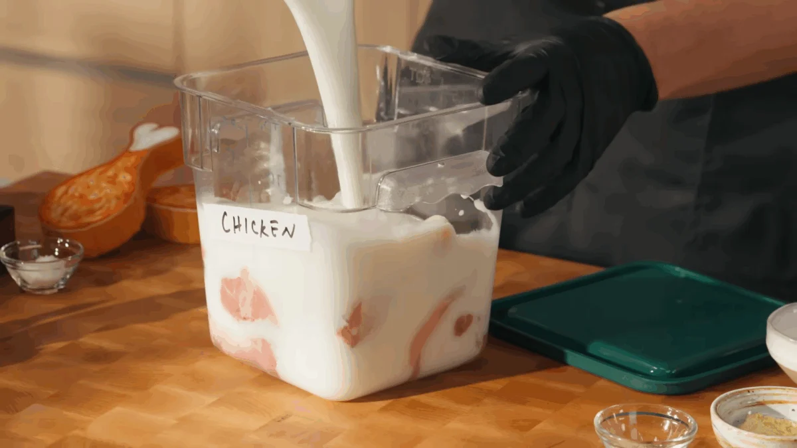
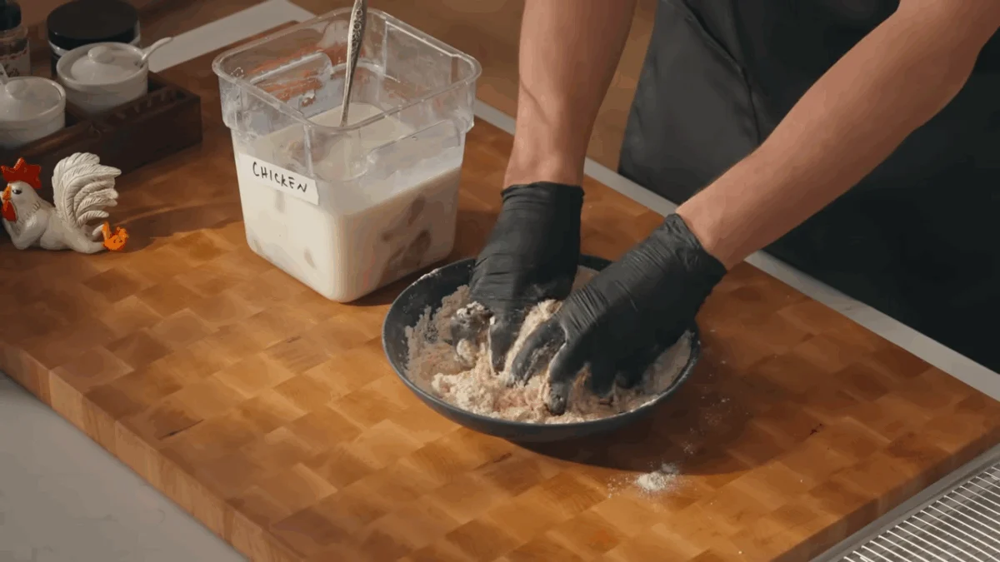
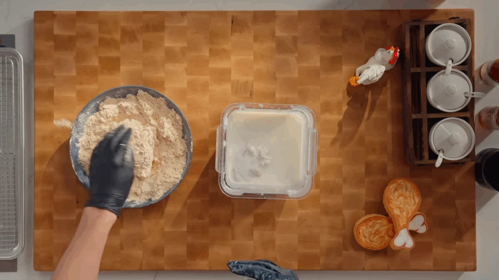
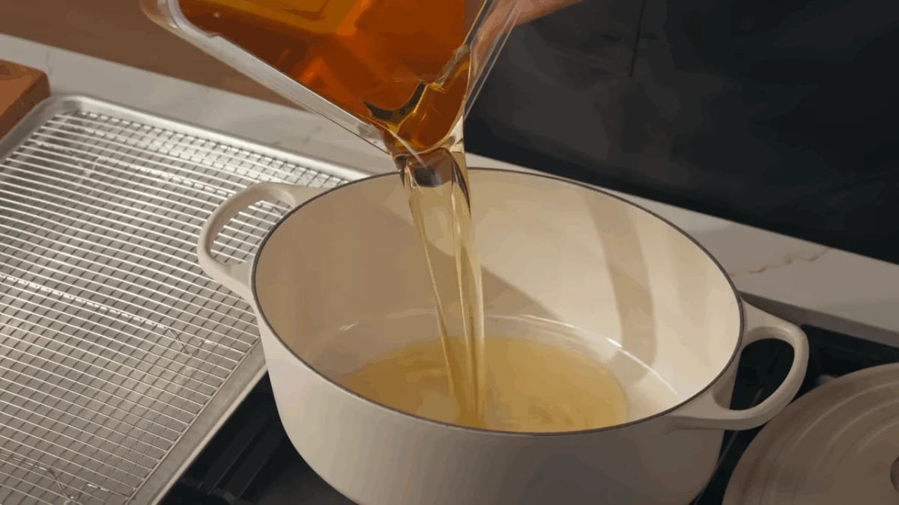
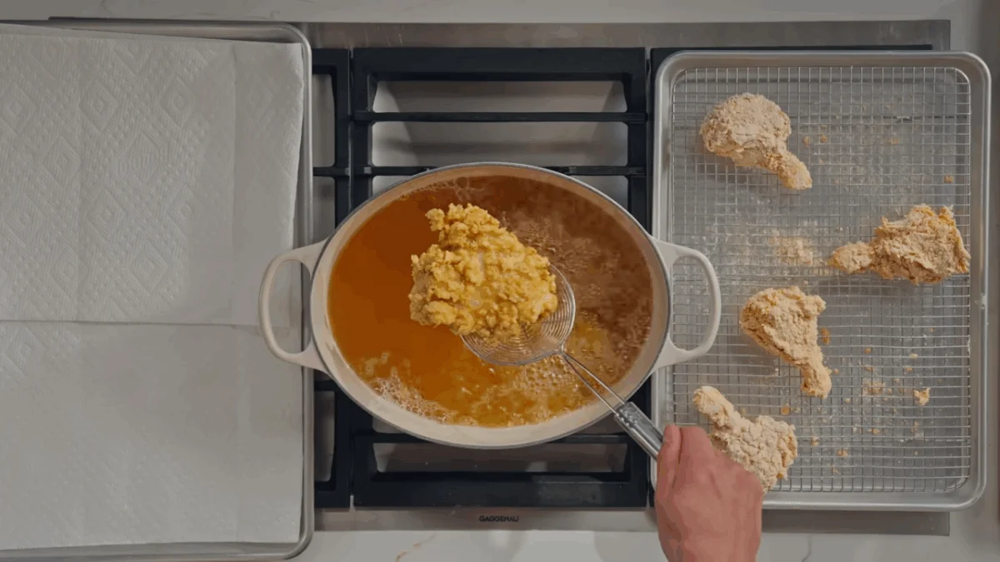
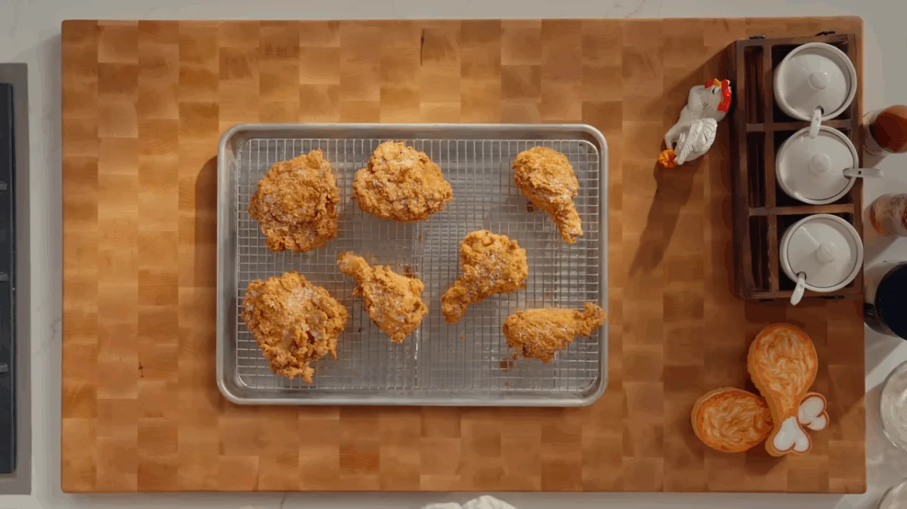

Buttermilk fried chicken is a classic Southern-style comfort food known for its ultra-crispy golden crust and juicy, tender meat inside. The secret to its texture and flavor lies in marinating the chicken in seasoned buttermilk, which tenderizes the meat while adding a rich, tangy base flavor.
The process begins by soaking bone-in, skin-on chicken pieces in buttermilk and salt. This marinade helps break down proteins in the chicken, ensuring it stays moist and flavorful after frying. The longer it rests, the more tender and flavorful the final result becomes.
A seasoned flour dredge is prepared using all-purpose flour combined with cornstarch, baking powder, and a blend of spices like paprika, garlic powder, onion powder, black pepper, thyme, and mustard powder. This combination creates a deeply flavored, crispy coating that clings perfectly to the chicken.
Each piece of marinated chicken is coated thoroughly in the dredge, ensuring every crevice is covered for maximum crunch. The flour mixture creates a textured crust that becomes golden and crisp when fried in hot oil.
The chicken is then fried in batches at a controlled temperature until the outside becomes deep golden brown and the inside is fully cooked. Maintaining steady heat is important to avoid burning the crust while ensuring the meat cooks through evenly.
Once fried, the chicken is rested briefly so the crust can set and stay crisp. It is then served warm, often with dipping sauces like ranch, blue cheese, or hot honey, which complement the salty, crispy coating with creamy or sweet contrast.
Place chicken pieces in a large bowl or bag with buttermilk and salt. Mix well to coat all pieces evenly. Cover and refrigerate for at least 2–6 hours so the chicken becomes tender and flavorful.

In a large bowl, mix flour, cornstarch, baking powder, and all spices. Lightly mix in a few spoonfuls of buttermilk to create small craggy bits that will form an extra crispy coating.

Remove chicken from the marinade, letting excess drip off. Press each piece firmly into the flour mixture until fully coated. Repeat for all pieces and place them on a wire rack to rest.

Pour oil into a heavy pot or deep pan and heat to about 325°F (163°C). Maintain a steady temperature for even frying and a crispy exterior.

Carefully add chicken pieces in batches. Fry until golden brown and the internal temperature reaches about 170°F (77°C), adjusting heat as needed to avoid burning.

Remove chicken and let it rest on a rack for a few minutes so the crust sets. Serve hot with ranch, blue cheese, hot honey, or hot sauce.
